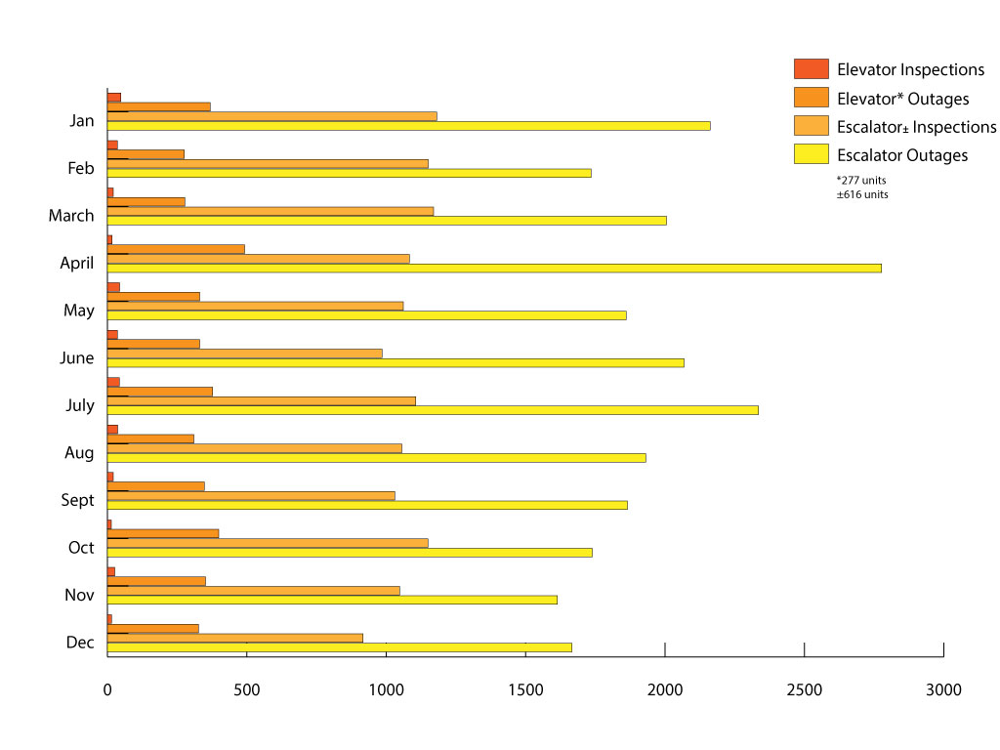
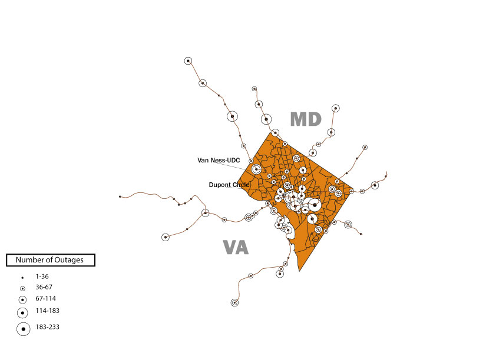
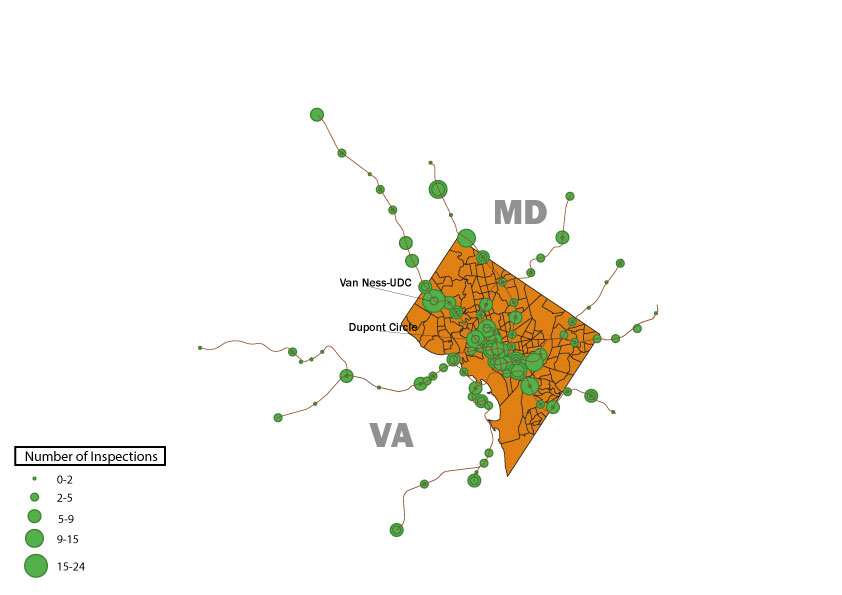

An inoperable escalator or elevator is an inconvenience commuters have to contend with when using the metrorail system. How often do these outages actually occur?
Elevator vs. Escalator Outages per month

Source: DC Metro Metrics
Above is a representation of the number of escalator and elevator outages by month compared to the number of inspections for the year 2017. As you can see, escalators experience outages at a far more outages than elevators. However, there are over twice as many escalators than elevators in metrorail stations.
If you've ever wondered where outages occur most, reference the following map.
Elevator and Escalator Outages by Station

Source: DC Metro Metrics
As evidenced by the map, outages occur far more often within city limits and in some of the busiest stations in the metro area. However, units in stations with less daily patronage than the major hubs experience a fair share of outages, as well. For instance, the average weekly passenger boardings for Dupont Circle was 16,948 in 2017, as opposed to 5,557 for Van Ness-UDC (source: WMATA Public Records). Still, 114 or more outages were reported for Van Ness-UDC, as opposed to 67 to 114 for Dupont Circle, during 2017.
It is also important to take into account the nature of the data, which counts outages per unit within a station.
Number of Elevator and Escalator Inspections per Station, 2017

Source: DC Metro Metrics
According to WMATA, preventive maintenance inspections are conducted at regular intervals. However, some stations receive inspections more often than others. Interestingly, though Van Ness had over 11,000 fewer daily patrons than Dupont Circle, it appears inspections were conducted more often at this station.
The data offered a lot to explore regarding when and where escalator and elevator outages occur within the Metrorail system. A small subset of WMATA's daily record-keeping has been represented in this presentation. Other questions to consider is why the elevators and escalators break down and how long, on average, units take to repair. Do factors such as the time of year, location, or day of the week play a role in the overall health of the escalator and elevator system? These are queries worthy of further research.